開発者向けに「 Direct3D de kuruma 」の経過で
作成したサンプル・プログラムをコチラで公開しています。
走るセリカ 2005/09/28版
キ～ボ～ドでＺＺＴセリカが走るゾ。要DirectX8 以降。
回るセリカ 2005/07/10版
キ～ボ～ドでＺＺＴセリカが回るゾ。要DirectX8 以降。
DirectX は
Microsoft のサイトからダウンロ～ドできます。
[2005/09/28] そうだったのか!?
3DAce がバ～ジョンアップしてたのでチェックした。
なにやらＸファイルの出力でテクスチャ座標にバグがあったそうな。
jimen.x を最新版で出力したら中央線が正しく表示されるようになった。
[2005/08/28] 放置 !?
久しぶりにプログラムをいじった。
60[fps]にしてスピ～ド感を出して、キ～ボ～ドに
反応してホイ～ルが回転するようにした。
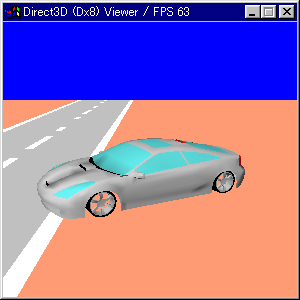
[2005/07/10] ついに公開っ
モデリングもそれなりになってきたのでプログラムも作ってみた。
キ～ボ～ドでグルグル回る～…
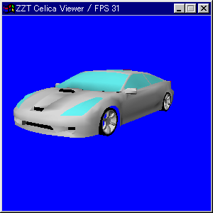
[2005/07/05] フロントもバランス取りっ
よく見るとフロントも大分おかしいよ…
ボンネット中央とバンパ～の両サイドの穴の部分を修正。
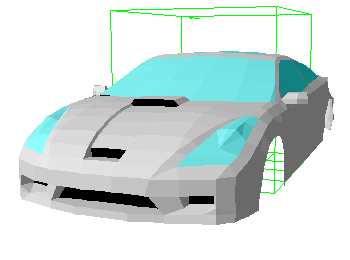
[2005/06/20] バランス取りっ
全体的にビミョウな部分を修正。
やっぱり、ど～見てもリアのバランスがおかしい。
モデリングが間違っている部分は誤魔化すしかないのだが…
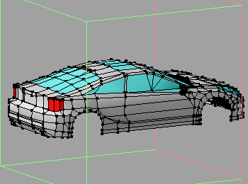
[2005/06/17] Celica TRD Sports Modellista
SS-I = ZZT230
SS-II = ZZT231
SSP = ZZT231Z
M = ZZT231ZM
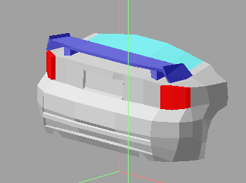
[2005/06/16] ポリゴン数 1200＋(370×4)＝？
リア周りのバランスを徹底的に調整。
そういえばアンテナとウインカ～を作ってなかったなぁ。
ホイ～ルもテクスチャを使わずに作ってるから
スポ～クの間から奥が見える…
キャリパ～＆ロ～タ～も作るのか…
ZZT230 仕様を Metasequoia LE でのレンダリング結果。
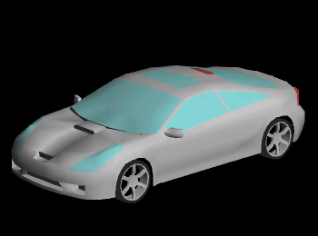
[2005/06/12] ポリゴン数 1000 over
非常に急ピッチでリア周りを作成。
フロント周りに比べて作りが荒い。
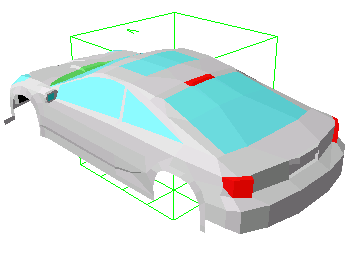
rok2dx にスケ～リング機能を追加した。
他のビュ～ワ～やネットに落ちてるD3Dテストプログラムと
サイズが合わない場合があるから以外に便利だったり。
[2005/06/06] 久しぶりにモデリングっ !!
フェンダ～及びヘッドライトのバランスが悪かったのでビミョウに修正。
さらにル～フ付近とサイドウインドウを途中まで作った。
ポリゴン数は720くらいあるらしい。
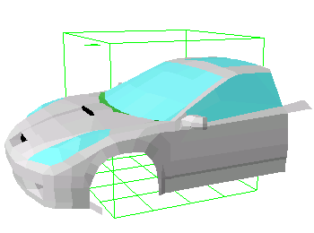
[2005/05/22] 行列計算？
D3DXライブラリを使わないでファイルサイズを
小さく出来ないかなと思って試してみた。
D3DXMatrixRotationX( ) などをお手製の関数に変えてみたけど、
40[KB]くらいしか小さくならなかった…
ちなみに高校では微分積分までしか勉強してなかったので
行列の計算の仕方がわからなくて D3DXMatrixMultiply( ) の
実装には苦労した。
[2005/05/16] モデリングが遅れ気味。
プログラムはそれなりに出来ているのにモデリングが
全然、進行してなぁ～い。
[2005/04/14] ビミョウに更新。
六角大王だと円形が非常に作りづらい事に今さら気がついた。
これだとホイ～ルが作れないよっ！
とりあえずネットを検索したら「六角大王支援ツール」を発見。
一応、これを使ってホイ～ルを作る事ができた。
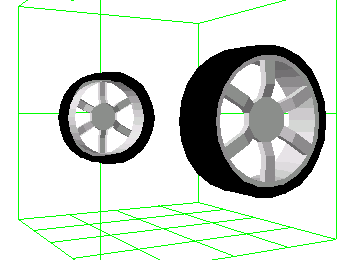
[2005/04/12] モデリング少しだけ。
フロントガラスとドア付近まで作った。
っていうかサイドミラーを作るのにかなり苦労した。
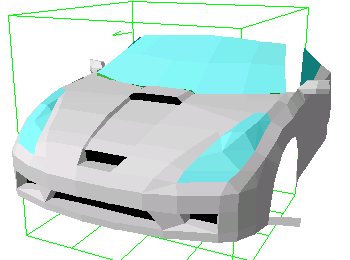
[2005/04/08] 六角大王は左右対称。
ワイパ～以外にも対象じゃない部分があった…
マフラ～はどうしよう？
ＴＴＥのセンタ～２本出しとかしか作れないじゃん。
[2005/04/05] rok2dx を更新。
Vector に登録する前にビミョウに少し機能追加する事にした。
自分は使わないけど関連付けにも対応した。
[2005/04/04] rok2dx を更新。
元の rok ファイルに x ファイルを上書きしてしまう
ものスゴイバグがあったのを修正。Σ（￣□￣；
他のソフトで rok → x を試していると変換結果がなんか違う…？
調べてみるとＺ軸が六角大王とDirect3Dでは反対になっているみたい。
そんな訳で「Ｚ軸を反転する」オプションを追加した。
[2005/04/02] rok2dx を更新。
あまり自分では使わないような機能まで追加した。
使いそうな機能はテキスト出力くらいかな。
[2005/03/27] サイト開設。
自分のテンションを保つ為(?)にサイトを作ってみた。
さらに手頃な rok → x 変換ソフトが無いので作ってみた。
[2005/03/24] モデリングの話。
左右対称の物しか作れないけど、クルマは左右対象で問題ないと
思っていたらワイパ～は対象じゃない…
バンパ～、ボンネット、フェンダ～まで作ってから気がついた(-_-;)
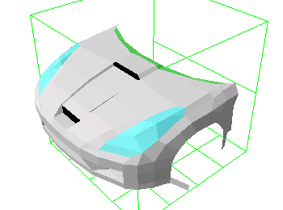
[2005/03/22] モデリング開始。
ＺＺＴセリカのモデリングをスタ～ト。
このプロジェクトは終わるんでしょうか？
Back